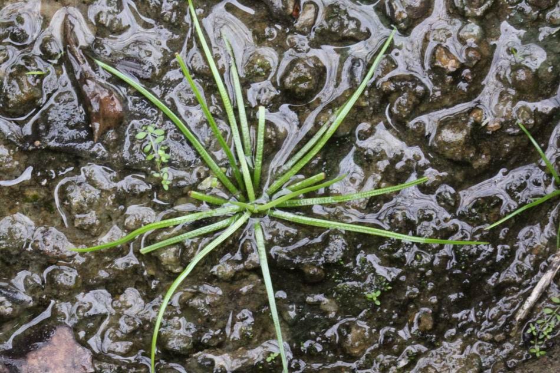

特徵
外觀跟一般的蕨類稙物大大不同，具有短型球莖，葉子翠綠細長，以螺旋排列方式叢生在球莖頂上，很像單子葉稙物的韭菜，又長在水中，故被命名為水韭。其每片葉子基部扁平膨大如湯匙狀，內側著生一個橢圓型的孢子囊。孢子囊又分為大孢子囊及小孢子囊兩種，偶爾同一孢子囊中會出現大小孢子混生之奇異現象，是有別於其他種水韭的重要特色之一。臺灣水韭具有景天酸代謝機制，可在黑暗中固定二氧化碳，以蘋果酸形式儲藏起來，白天再轉化為二氧化碳，更有效地進行光合作用。


分布
目前所知，全世界僅臺灣台北陽明山國家公園所屬的七星山夢幻湖有野外生產，海拔約 850 公尺，為臺灣稀有及將滅絕之植物。
用途
綠化植物：常被做水生綠化植物用。